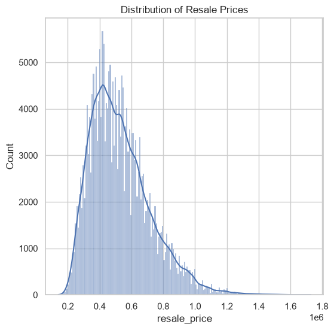
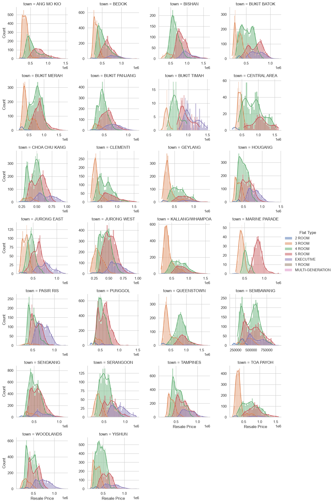
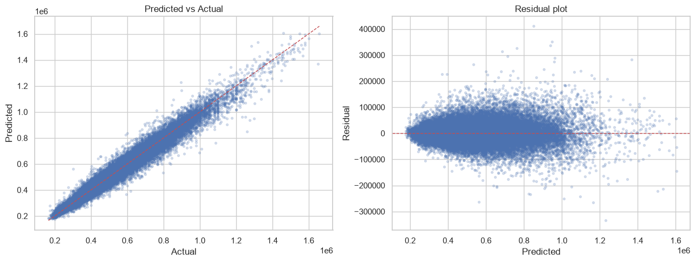

Project 1#
# ---- Core -------------------------------------------------------------------
import numpy as np
import pandas as pd
import matplotlib.pyplot as plt
import seaborn as sns
# ---- Preprocessing ----------------------------------------------------------
from sklearn.compose import ColumnTransformer
from sklearn.pipeline import Pipeline
from sklearn.impute import SimpleImputer
from sklearn.preprocessing import StandardScaler, OneHotEncoder
from sklearn.feature_selection import VarianceThreshold
from sklearn.decomposition import PCA
# ---- Model selection --------------------------------------------------------
from sklearn.model_selection import (
train_test_split, KFold, StratifiedKFold,
cross_val_score, cross_validate,
GridSearchCV, RandomizedSearchCV,
)
# ---- Models -----------------------------------------------------------------
from sklearn.linear_model import Ridge, LogisticRegression
from sklearn.ensemble import (
RandomForestRegressor, RandomForestClassifier, IsolationForest,
)
from sklearn.cluster import KMeans
from sklearn.neighbors import LocalOutlierFactor
import xgboost as xgb
# ---- Metrics ----------------------------------------------------------------
from sklearn.metrics import (
mean_squared_error, mean_absolute_error, r2_score,
accuracy_score, precision_score, recall_score, f1_score,
roc_auc_score, average_precision_score,
confusion_matrix, classification_report,
RocCurveDisplay, PrecisionRecallDisplay, ConfusionMatrixDisplay,
precision_recall_curve, silhouette_score,
)
from sklearn.inspection import permutation_importance
# ---- Config -----------------------------------------------------------------
RANDOM_STATE = 42 # set everywhere so results are reproducible
pd.set_option("display.max_columns", 50)
sns.set_theme(style="whitegrid")
# ---- Paths (edit to match your repo) ----------------------------------------
HDB_PATH = "/Users/cheerupdimbo/Documents/ds-sprint-july/ds-sprint-july/projects/projects1_hdb/ResaleflatpricesbasedonregistrationdatefromJan2017onwards.csv"
SECOM_PATH = "/Users/cheerupdimbo/Documents/ds-sprint-july/ds-sprint-july/projects/projects2_secom/uci-secom.csv"
df = pd.read_csv(HDB_PATH)
print(df.shape)
print("\n")
print(df.dtypes)
(234672, 11)
month str
town str
flat_type str
block str
street_name str
storey_range str
floor_area_sqm float64
flat_model str
lease_commence_date int64
remaining_lease str
resale_price float64
dtype: object
df.head()
| month | town | flat_type | block | street_name | storey_range | floor_area_sqm | flat_model | lease_commence_date | remaining_lease | resale_price | |
|---|---|---|---|---|---|---|---|---|---|---|---|
| 0 | 2017-01 | ANG MO KIO | 2 ROOM | 406 | ANG MO KIO AVE 10 | 10 TO 12 | 44.0 | Improved | 1979 | 61 years 04 months | 232000.0 |
| 1 | 2017-01 | ANG MO KIO | 3 ROOM | 108 | ANG MO KIO AVE 4 | 01 TO 03 | 67.0 | New Generation | 1978 | 60 years 07 months | 250000.0 |
| 2 | 2017-01 | ANG MO KIO | 3 ROOM | 602 | ANG MO KIO AVE 5 | 01 TO 03 | 67.0 | New Generation | 1980 | 62 years 05 months | 262000.0 |
| 3 | 2017-01 | ANG MO KIO | 3 ROOM | 465 | ANG MO KIO AVE 10 | 04 TO 06 | 68.0 | New Generation | 1980 | 62 years 01 month | 265000.0 |
| 4 | 2017-01 | ANG MO KIO | 3 ROOM | 601 | ANG MO KIO AVE 5 | 01 TO 03 | 67.0 | New Generation | 1980 | 62 years 05 months | 265000.0 |
df.info()
<class 'pandas.DataFrame'>
RangeIndex: 234672 entries, 0 to 234671
Data columns (total 11 columns):
# Column Non-Null Count Dtype
--- ------ -------------- -----
0 month 234672 non-null str
1 town 234672 non-null str
2 flat_type 234672 non-null str
3 block 234672 non-null str
4 street_name 234672 non-null str
5 storey_range 234672 non-null str
6 floor_area_sqm 234672 non-null float64
7 flat_model 234672 non-null str
8 lease_commence_date 234672 non-null int64
9 remaining_lease 234672 non-null str
10 resale_price 234672 non-null float64
dtypes: float64(2), int64(1), str(8)
memory usage: 19.7 MB
df.isnull().sum().sort_values(ascending= True)
month 0
town 0
flat_type 0
block 0
street_name 0
storey_range 0
floor_area_sqm 0
flat_model 0
lease_commence_date 0
remaining_lease 0
resale_price 0
dtype: int64
plt.figure(figsize=(6,6))
sns.histplot(
df['resale_price'],
kde=True,
)
plt.title('Distribution of Resale Prices')
plt.show()

g = sns.FacetGrid(df, col= 'town', col_wrap=4, height=3, sharey= False, sharex= False, hue= 'flat_type')
g.map(sns.histplot, 'resale_price', bins = 30, kde=True)
g.add_legend(title='Flat Type')
g.set_axis_labels('Resale Price', 'Count')
plt.show()

df["month"] = pd.to_datetime(df["month"])
df["sale_year"] = df["month"].dt.year
df["flat_age"] = df["sale_year"] - df["lease_commence_date"]
storey_bounds = df["storey_range"].str.extract(r"(\d+)\s+TO\s+(\d+)").astype(float)
df["storey_mid"] = storey_bounds.mean(axis=1)
df.head()
| month | town | flat_type | block | street_name | storey_range | floor_area_sqm | flat_model | lease_commence_date | remaining_lease | resale_price | sale_year | flat_age | storey_mid | |
|---|---|---|---|---|---|---|---|---|---|---|---|---|---|---|
| 0 | 2017-01-01 | ANG MO KIO | 2 ROOM | 406 | ANG MO KIO AVE 10 | 10 TO 12 | 44.0 | Improved | 1979 | 61 years 04 months | 232000.0 | 2017 | 38 | 11.0 |
| 1 | 2017-01-01 | ANG MO KIO | 3 ROOM | 108 | ANG MO KIO AVE 4 | 01 TO 03 | 67.0 | New Generation | 1978 | 60 years 07 months | 250000.0 | 2017 | 39 | 2.0 |
| 2 | 2017-01-01 | ANG MO KIO | 3 ROOM | 602 | ANG MO KIO AVE 5 | 01 TO 03 | 67.0 | New Generation | 1980 | 62 years 05 months | 262000.0 | 2017 | 37 | 2.0 |
| 3 | 2017-01-01 | ANG MO KIO | 3 ROOM | 465 | ANG MO KIO AVE 10 | 04 TO 06 | 68.0 | New Generation | 1980 | 62 years 01 month | 265000.0 | 2017 | 37 | 5.0 |
| 4 | 2017-01-01 | ANG MO KIO | 3 ROOM | 601 | ANG MO KIO AVE 5 | 01 TO 03 | 67.0 | New Generation | 1980 | 62 years 05 months | 265000.0 | 2017 | 37 | 2.0 |
TARGET = 'resale_price'
num_features = ["floor_area_sqm", "flat_age", "storey_mid", "sale_year"]
cat_features = ["town", "flat_type", "flat_model"]
X = df[num_features + cat_features]
y = df[TARGET]
X_train, X_test, y_train, y_test = train_test_split(
X, y, test_size=0.2, random_state=RANDOM_STATE
)
print(f'train={X_train.shape} \ntest={X_test.shape}')
train=(187737, 7)
test=(46935, 7)
numeric_pipe = Pipeline([
("scale", StandardScaler())
])
categorial_pipe = Pipeline([
("onehot", OneHotEncoder())
])
preprocessor = ColumnTransformer([
('num', numeric_pipe, num_features),
('cat', categorial_pipe, cat_features)
])
baseline = Pipeline([
("prep", preprocessor),
("model", Ridge(alpha=0.1))
])
cv = KFold(
n_splits=5,
shuffle=True,
random_state=RANDOM_STATE
)
rmse_cv=-cross_val_score(
baseline, X_train, y_train, cv=cv, scoring="neg_root_mean_squared_error"
)
print(f"Ridge baseline RMSE: {rmse_cv.mean():,.0f}(+/-{rmse_cv.std():,.0f})")
print(f"Ridge baseline RMSE: {rmse_cv.mean()}(a/-{rmse_cv.std()})")
Ridge baseline RMSE: 69,305(+/-310)
Ridge baseline RMSE: 69305.13180343318(a/-309.6739998982135)
candidates={
"Ridge": Ridge(
alpha=0.1
),
"rf": RandomForestRegressor(
n_estimators=200,
random_state=RANDOM_STATE,
n_jobs=-1
),
"xgb": xgb.XGBRegressor(
n_estimators = 400,
learning_rate=0.1,
max_depth = 6,
random_state = RANDOM_STATE,
n_jobs=-1
)
}
for name, model in candidates.items():
pipe=Pipeline([
("prep",
preprocessor),
("model",
model)
])
scores = -cross_val_score(
pipe, X_train, y_train, cv=cv, scoring="neg_root_mean_squared_error"
)
print(f"{name:6s}\nRMSE {scores.mean():>10,.0f} (+/- {scores.std():,.0f})")
Ridge
RMSE 69,305 (+/- 310)
rf
RMSE 39,235 (+/- 282)
xgb
RMSE 39,900 (+/- 212)
param_grids = {
"Ridge": {
"model__alpha": [0.01, 0.1, 1.0, 10.0]
},
"rf": {
"model__n_estimators": [200, 400],
"model__max_depth": [None, 8, 12]
},
"xgb": {
"model__max_depth": [4, 6, 8],
"model__learning_rate": [0.05, 0.1],
"model__n_estimators": [300, 600],
"model__subsample": [0.8, 1.0],
"model__colsample_bytree": [0.8, 1.0]
}
}
results = {}
for name, model in candidates.items():
search = GridSearchCV(
Pipeline([
("prep", preprocessor),
("model", model)
]),
param_grids[name],
cv=cv,
scoring="neg_root_mean_squared_error",
n_jobs=-1,
verbose=1,
refit=True
)
search.fit(X_train, y_train)
print(f'{name} CV RMSE: {-search.best_score_:.0f}')
results[name] = {
"search" : search,
"best_model" : search.best_estimator_,
"best_params" : search.best_params_
}
Fitting 5 folds for each of 4 candidates, totalling 20 fits
Ridge CV RMSE: 69305
Fitting 5 folds for each of 6 candidates, totalling 30 fits
rf CV RMSE: 39190
Fitting 5 folds for each of 48 candidates, totalling 240 fits
/opt/anaconda3/envs/dsprint/lib/python3.11/site-packages/joblib/externals/loky/process_executor.py:782: UserWarning: A worker stopped while some jobs were given to the executor. This can be caused by a too short worker timeout or by a memory leak.
warnings.warn(
xgb CV RMSE: 36017
final_model = results["xgb"]["best_model"]
y_pred = final_model.predict(X_test)
print(f"RMSE : {np.sqrt(mean_squared_error(y_test, y_pred)):,.0f}")
print(f"MAE. : {mean_absolute_error(y_test, y_pred):,.0f}")
print(f"MAE. : {r2_score(y_test, y_pred):,.0f}")
RMSE : 36,020
MAE. : 25,796
MAE. : 1
fig, axes = plt.subplots(1,2, figsize=(13, 5))
axes[0].scatter(y_test, y_pred, alpha = 0.2, s=8)
lims = (y_test.min(), y_test.max())
axes[0].plot(lims, lims, "r--", lw=1)
axes[0].set(xlabel="Actual", ylabel="Predicted", title="Predicted vs Actual")
residuals = y_test-y_pred
axes[1].scatter(y_pred, residuals, alpha=0.2, s=8)
axes[1].axhline(0, color="r", ls="--", lw=1)
axes[1].set(xlabel="Predicted", ylabel="Residual", title="Residual plot")
plt.tight_layout(); plt.show
<function matplotlib.pyplot.show(close=None, block=None)>

new_data = pd.DataFrame({
"town": ["ANG MO KIO"],
"flat_type": ["4 ROOM"],
"storey_range": ["10 TO 12"],
"floor_area_sqm": [95.0],
"flat_model": ["Improved"],
"lease_commence_date": [1990],
})
# Recreate the same engineered features used during training
new_data["sale_year"] = 2026 # or pd.to_datetime("2026-06").year, whatever your "current" sale year is
new_data["flat_age"] = new_data["sale_year"] - new_data["lease_commence_date"]
storey_bounds = new_data["storey_range"].str.extract(r"(\d+)\s+TO\s+(\d+)").astype(float)
new_data["storey_mid"] = storey_bounds.mean(axis=1)
predicted_price = final_model.predict(new_data)
print(predicted_price)
[649886.9]
perm = permutation_importance(
final_model,
X_test,
y_test,
n_repeats=10,
random_state=RANDOM_STATE,
scoring="neg_root_mean_squared_error",
n_jobs=-1
)
imp = (pd.Series(
perm.importances_mean,
index = X_test.columns
).sort_values(ascending=False)
)
plt.figure(
figsize=(
8,
4
)
)
imp.head(10).plot(kind="barh").invert_yaxis()
plt.title("Permutation importance (RMSE increase when shuffled)")
plt.tight_layout(); plt.show()

import ipywidgets as widgets
from IPython.display import display, clear_output
import pandas as pd
# --- Input widgets (adjust choices to match your actual categories) ---
town_w = widgets.Dropdown(options=sorted(df["town"].unique()), description="Town:")
flat_type_w = widgets.Dropdown(options=sorted(df["flat_type"].unique()), description="Flat type:")
storey_range_w = widgets.Text(value="10 TO 12", description="Storey range:")
floor_area_w = widgets.FloatText(value=95.0, description="Floor area:")
flat_model_w = widgets.Dropdown(options=sorted(df["flat_model"].unique()), description="Flat model:")
lease_w = widgets.IntText(value=1990, description="Lease start:")
sale_year_w = widgets.IntText(value=2026, description="Sale year:")
predict_btn = widgets.Button(description="Predict price", button_style="success")
predict_out = widgets.Output()
def build_row():
row = pd.DataFrame({
"town": [town_w.value],
"flat_type": [flat_type_w.value],
"storey_range": [storey_range_w.value],
"floor_area_sqm": [floor_area_w.value],
"flat_model": [flat_model_w.value],
"lease_commence_date": [lease_w.value],
"sale_year": [sale_year_w.value],
})
row["flat_age"] = row["sale_year"] - row["lease_commence_date"]
bounds = row["storey_range"].str.extract(r"(\d+)\s+TO\s+(\d+)").astype(float)
row["storey_mid"] = bounds.mean(axis=1)
return row
def on_predict_click(b):
with predict_out:
clear_output()
row = build_row()
pred = final_model.predict(row)[0]
print(f"Predicted resale price: ${pred:,.0f}")
predict_btn.on_click(on_predict_click)
display(town_w, flat_type_w, storey_range_w, floor_area_w, flat_model_w, lease_w, sale_year_w, predict_btn, predict_out)
# Holds new entries in memory until you click "Retrain"
new_entries = []
price_w = widgets.FloatText(value=500000.0, description="Actual price:")
add_btn = widgets.Button(description="Add entry", button_style="info")
retrain_btn = widgets.Button(description="Retrain on combined data", button_style="warning")
add_out = widgets.Output()
def on_add_click(b):
with add_out:
row = build_row()
row["resale_price"] = price_w.value
new_entries.append(row)
print(f"Added. Total new entries pending: {len(new_entries)}")
def on_retrain_click(b):
with add_out:
clear_output()
if not new_entries:
print("No new entries to retrain on yet.")
return
new_df = pd.concat(new_entries, ignore_index=True)
X_new = new_df.drop(columns=["resale_price"])
y_new = new_df["resale_price"]
X_combined = pd.concat([X_train, X_new], ignore_index=True)
y_combined = pd.concat([y_train, y_new], ignore_index=True)
final_model.fit(X_combined, y_combined) # refits same pipeline (same tuned hyperparams)
print(f"Retrained on {len(X_combined)} rows ({len(new_entries)} new).")
add_btn.on_click(on_add_click)
retrain_btn.on_click(on_retrain_click)
display(price_w, add_btn, retrain_btn, add_out)